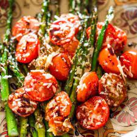

Asparagus and Cherry Tomatoes

Description:
Ideally, use the same pan you cooked your chicken breast in. Prepare your asparagus by cutting the last third to fourth of the bottom off. Wash your veggies. Add some oil to the pan. When it is shimmering hot, add your asparagus. Scrape your pan (if it is stainless) while cooking your asparagus. Add your cherry tomatoes. Add some salt, pepper, and minced garlic if you wish. Sprinkle with the parmasean cheese before serving.
Ingredients:
- Asparagus
- Cherry tomatoes
- Minced garlic
- Parmesan cheese
Steps:
- Prepare your asparagus by cutting the last third to fourth of the bottom off.
- Wash your vegetables
- In the same pan you cooked your chicken breast in, heat up some oil on medium until it is shimmering hot.
- Add your asparagus. Allow to soften.
- Add your cherry tomatoes.
- Add your minced garlic, salt, and pepper.
- Sprinkle some parmesan cheese before serving.